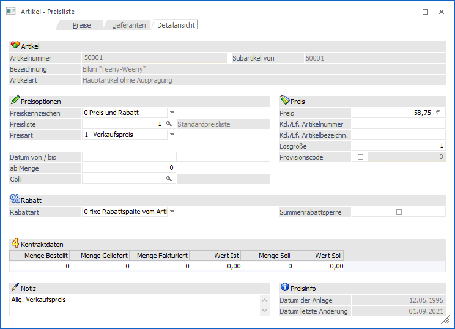
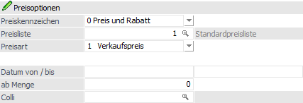
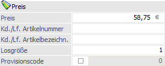
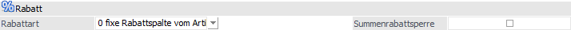
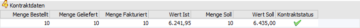
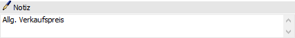
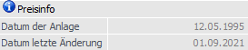
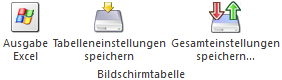

Um zusätzliche Informationen, wie z.B. Kunden- bzw. Lieferantenspez. Artikelnummern, Bezeichnungen, usw. zu den einzelnen Preisen zu hinterlegen, wird der gewünschte Preis in der Preistabelle markiert und der Tabellenbutton "Detailansicht" angewählt.

Das Fenster ist in 5 Bereiche gegliedert. Einige der Eingabefelder sind gleich jenen aus dem Register "Preise", d.h. es können die Werte wahlweise in einem der beiden Register hinterlegen.
Preisoptionen

Ø Preiskennzeichen
An dieser Stelle wird definiert, ob es sich um einen Preiseintrag, einen Rabatteintrag oder einen Preis- und Rabatteintrag handelt. Beim Typ "1 - Preis" wird der Bereich "Rabatt" im unteren Teil des Fensters nicht angezeigt. Beim Typ "2 - Rabatt" wird der rechte Bereich "Preis" nicht angezeigt. Beim Typ "0 - Preis und Rabatt" werden beide Bereiche angezeigt.
Hinweis
In einem Artikel sollten zur Übersicht / Nachvollziehbarkeit der Preisfindung entweder nur Einträge des Typs "0 - Preis und Rabatt" oder der Typen "1 - Preis" und ggfs. "2 - Rabatt" (d.h. gemischt) vorkommen.
Wenn es einzelne Einträge für den Preis und die Rabatte gibt, dann wird im späteren Verlauf nach einem Preis und anschließend nach einem Rabatt gesucht und die Kombination z.B. in die Belegerfassung übergeben.
Achtung
Von der Preishierarchie her ist eine Preiszeile mit dem Typ "0 - Preis und Rabatt" immer hochwertiger als "1 - Preis" und "2 - Rabatt".
Ø Preisliste
In diesem Feld wird die Preisliste des Preises / Rabatts hinterlegt. Über die Kombination "Preisliste im Artikel" und "Preisliste im Personenkonto" erfolgt die grundsätzliche Zuordnung von Preisen / Rabatten.
Ø Preisart
Mit Hilfe einer Auswahlliste wird im Feld "Preisart" definiert um was für eine Art von Preislisteneintrag es sich handelt. Folgende Varianten stehen zur Verfügung:
ü 1 - Verkaufspreis
ü 2 - Kundengruppenpreis
ü 3 - Kundenspez. Preis
ü 11 - Einkaufspreis
ü 12 - Lieferantengruppenpreis
ü 13 - Lieferantenspez. Preis
Ø für Konto / Gruppe
Das Feld "für Konto / Gruppe" wird nur angezeigt, wenn es sich um einen gruppen- oder kontenspezifischen Preis handelt. In dieser Abhängigkeit muss ein entsprechendes Objekt hinterlegt werden, für welches der Preislisteneintrag gelten soll.
ü 2 - Kundengruppenpreis => Kundengruppe
ü 3 - Kundenspez. Preis => Kunde (Debitor)
ü 12 - Lieferantengruppenpreis => Lieferantengruppe
ü 13 - Lieferantenspez. Preis => Lieferant (Kreditor)
Ø Datum von / Datum bis
In diese Felder wird der Gültigkeitszeitraum des Preises / Rabatts hinterlegt.
Ø ab Menge
An dieser Stelle wird die Stückzahl hinterlegt, ab wann der Preis / Rabatt gelten soll.
Ø Colli
Handelt es sich um einen Eintrag des Typs "0 - Preis und Rabatt" oder "1 - Preis", so wird das Feld "Colli" zur Verfügung gestellt. Durch eine Eingabe an dieser Stelle wird der Basis-Colli (Register "Preise" - Unterregister "Preise") für die Belegerfassung und den automatischen Einkauf übersteuert.
Preis

Der Bereich "Preis" steht nur bei den Typen "0 - Rabatt und Preis" bzw. "1 - Preis" zur Verfügung.
Ø Preis
An dieser Stelle wird der Preis des Artikels hinterlegt.
Ø Kd./Lf. Artikelnummer / Kd./Lf. Artikelbezeichnung
Hier wird die Artikelnummer und -bezeichnung des Lieferanten bzw. des Kunden eingetragen.
Ø Losgröße
An dieser Stelle erfolgt die Hinterlegung einer Losgröße, d.h. die Menge die ein- bzw. verkauft wird, muss gleich bzw. ein Vielfaches dieses Wertes sein.
Ø Provisionscode
Nach Aktivieren der Checkbox kann ein Provisionscode hinterlegt werden, welcher die Hinterlegung aus dem Artikelstamm (Register "Preise" - Unterregister "Preise" - Feld "Provisionscode") übersteuert.
Ø Lieferantenstatus
Bei Preislisteneinträgen des Typs "13 - Lieferantenspez. Preis" kann hier ein Status (A, B, C) vergeben werden, welcher die Priorität des Lieferanten kennzeichnet. Der Hauptlieferant bekommt automatisch das Kennzeichen "A". Beim automatischen Bestellvorschlag kann nach diesem Kennzeichen selektiert werden.
Hinweis
Werden mehrere Lieferanten mit dem Kennzeichen "A" hinterlegt, so wird beim Einkauf, wenn die Selektion "Hauptlieferant" ausgewählt wird, der erste Lieferant mit diesem Kennzeichen herangezogen.
Hinweis 2
Je nachdem welche Option in den FAKT-Parametern im Bereich Einkauf "Lieferantenstatus bei Eingabe im Artikelstamm" gewählt wurde und das Register "Lieferanten" zumindest einmal geöffnet wurde, kann der Status von lieferantenspezifischen Preisen beim Speichern geprüft werden und es wird ggf. eine entsprechende Hinweismeldung ausgegeben und der Datensatz kann nicht gespeichert werden. Weitere Hinweise zu diesem Thema befinden sich im Bereich der FAKT-Parameter.
Ø WBT
Die Abkürzung "WBT" steht für "Wiederbeschaffungstage" und definiert die Zeit (in Tagen), die es dauert, bis die Waren im Normalfall eintrifft (ab Bestellung). Diese Information kann bei Preislisteneinträgen des Typs "13 - Lieferantenspez. Preis" hinterlegt werden.
Rabatt

Der Bereich Rabatt steht nur bei den Typen "0 - Preis und Rabatt" bzw. "2 - Rabatt" zur Verfügung.
Ø Rabattart
An dieser Stelle kann die Art des Rabatts definiert werden, wobei folgende Varianten zur Verfügung stehen:
ü 0 - fixe Rabattspalte
(Art.)
Wird diese Option ausgewählt, so wird bei der Rabattfindung in der
Belegerfassung auf die Rabattmatrix zurückgegriffen. Bei der Matrix handelt es
sich um eine Rabattleiste (hinterlegt im Personenkonto), welche unterschiedliche
Rabattsätze (untergliedern in sogenannte Rabattspalten) beinhaltet.
Die für
dieses System benötigte Rabattspalte stammt bei der Einstellung "fixe
Rabattspalte (Art.)" direkt aus dem Artikelstamm (Register "Preise" -
Unterregister "Preise" - Feld "Rabattspalte").
ü 1 - Rabatt in %
Pro Preiszeile
können 2 Zeilenrabatte hinterlegt werden. Dieser Rabatt übersteuert die
Rabattmatrix (d.h. das Rabattsystem bestehend aus Rabattleiste und
Rabattspalte).
Hinweis
Ein Rabatt muss im Minus erfasst werden, ein Zuschlag hingegen positiv.
ü 2 - Rabattspalte
Bei Anwahl
dieser Option wird mit der Rabattmatrix (siehe Feld "fixe Rabattspalte (Art.)")
gearbeitet. In dem Eingabefeld "Rabattspalte" erfolgt anschließend die Angabe
der Rabattspalte (0 bis 9999). Nach dieser Spalte wird wiederum in der (den)
Rabattleiste(n) des Kunden / Lieferanten gesucht um einen passenden Rabatt zu
finden.
Ø Summenrabattsperre
Ist diese Option aktiviert, so wird der jeweilige Artikel nicht in die Summenrabattberechnung miteinbezogen.
Tabelle "Kontraktdaten"

Handelt es sich um einen Kontraktpreis (Kontrakt = Rahmenvertrag), so sind in dieser Tabelle alle relevanten Informationen zu der jeweiligen Kontraktzeile aufgeführt:
Ø Menge bestellt
Es handelt es sich um jene Menge aus dem Kontrakt, die bereits in eine Bestellung umgewandelt wurde.
Ø Menge geliefert
Es handelt es sich um jene Menge aus dem Kontrakt, die bereits ausgeliefert wurde.
Ø Menge fakturiert
Es handelt es sich um jene Menge aus dem Kontrakt, die bereits fakturiert wurde.
Hinweis
Diese Information wird immer gefüllt, d.h. dieses geschieht auch, wenn es sich nicht um einen Kontraktpreis handelt.
Ø Wert Ist
Hier wird der bisheriger Abnahmewert aufgeführt. Dieser bildet sich immer aus den bereits erfassten Fakturen.
Hinweis
Diese Information wird immer gefüllt, d.h. dieses geschieht auch, wenn es sich nicht um einen Kontraktpreis handelt.
Ø Menge Soll
Hier wird die vereinbarte Abnahmemenge aus dem Kontrakt angezeigt.
Ø Wert Soll
An dieser Stelle wird der vereinbarter Abnahmewert aus dem Kontrakt angezeigt.
Ø Kontraktstatus
In dieser Spalte wird der Status der Kontraktzeile mit Hilfe eines Icons dargestellt.
ü  - offen
- offen
Es handelt sich um eine nicht
abgeschlossene Kontraktzeile.
ü  - abgeschlossen
- abgeschlossen
Es handelt sich um eine
manuell oder automatisch abgeschlossene Kontraktzeile. Solche Zeilen werden bei
der Preisfindung nicht berücksichtigt, sowie im Kontrakte abbuchen nicht zur
Lieferung vorgeschlagen.
Notiz

Ø Notiz
An dieser Stelle kann eine Notiz für den Preislisteneintrag hinterlegt werden.
Preisinfo

Ø Datum der Anlage
In diesem Feld wird das Datum der Preisanlage protokolliert.
Ø Datum letzte Änderung
In diesem Feld wird das Datum der letzten Änderung des Preises protokolliert.
Tabellenbuttons

Ø Ausgabe Excel
Durch Anwahl des Buttons "Ausgabe Excel" wird der Inhalt der Tabelle an Microsoft Excel übergeben.
Ø Tabelleneinstellungen speichern
Die Spalten einer Tabelle können grundsätzlich an beliebige Positionen verschoben, bzw. in der Breite entsprechend angepasst werden. Durch Anwahl des Buttons "Tabelleneinstellungen speichern" werden die Einstellungen benutzerspezifisch gespeichert und bei dem nächsten Aufruf des Programmpunktes wieder vorgeschlagen.
Ø Gesamteinstellungen speichern
Im Gegensatz zu "Tabelleneinstellungen speichern" können mit "Gesamteinstellungen speichern" mehrere Tabellenaufbauten gespeichert und nach Wunsch geladen werden. Zusätzlich werden Sonderfunktionen der Tabelle (z.B. "Spalte gruppieren") ebenfalls bei der Speicherung bedacht.
Buttons

Ø Ok
Durch Anwahl des Buttons "Ok" bzw. der Taste F5 werden die getätigten Eingaben zwischengespeichert und zurück in das Ausgangsregister (Register "Preise" bzw. Register "Lieferanten") gewechselt. Die endgültige Speicherung erfolgt bei Speicherung des Artikels.
Hinweis
Bei Anklicken des Registers "Preise" bzw. "Lieferanten" (je nach Ausgangsregister) wird ebenfalls zwischengespeichert und zurückgewechselt.
Ø Ende
Durch Anwahl des Buttons "Ende" bzw. der Taste ESC werden die getätigten Eingaben verworfen und zurück in das Ausgangsregister (Register "Preise" bzw. Register "Lieferanten") gewechselt.
Ø VCR-Buttons
Über die so genannten VCR-Buttons kann durch Mausklick zwischen den Preisen des Artikels geblättert werden.
ü  Damit kann der
erste Preis angesprochen werden.
Damit kann der
erste Preis angesprochen werden.
ü  Damit kann der
vorherige Preis angesprochen werden.
Damit kann der
vorherige Preis angesprochen werden.
ü  Damit kann der
nächste Preis angesprochen werden.
Damit kann der
nächste Preis angesprochen werden.
ü  Damit kann der
letzte Preis angesprochen werden.
Damit kann der
letzte Preis angesprochen werden.
Hinweis
Bei Nutzung der VCR-Buttons werden die getätigten Eingaben zwischengespeichert. Die endgültige Speicherung erfolgt bei Speicherung des Artikels.